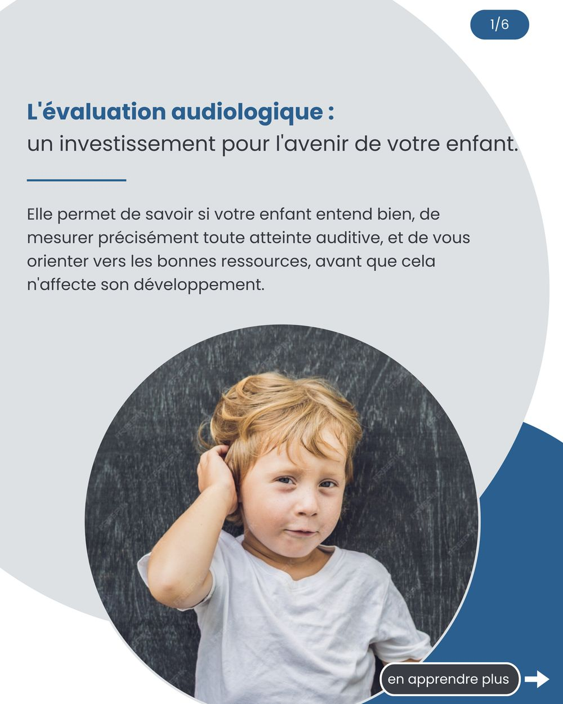

Évaluation audiologique, adulte
Un bilan auditif complet pour comprendre l’origine de vos difficultés d’écoute et de vos autres symptômes, puis identifier les prochaines étapes.
En savoir plus →
Roxanne Bolduc, audiologiste
Ayez l’heure juste sur l’état de votre audition. Une évaluation complète et des explications claires : tout ce qu’il faut pour décider de la suite en toute confiance.
Membre de l’Ordre des orthophonistes et audiologistes du Québec · #4182
Cinq points de service, de Québec à Rivière-du-Loup
Aucune référence médicale requise
Des tests reconnus par la RAMQ, la CNESST et Anciens Combattants Canada. Des résultats expliqués clairement et des recommandations selon vos besoins.
Un bilan auditif complet pour comprendre l’origine de vos difficultés d’écoute et de vos autres symptômes, puis identifier les prochaines étapes.
En savoir plus →Des méthodes adaptées à chaque âge, dès les premiers mois de vie, dans une approche ludique où l’enfant participe par le jeu.
En savoir plus →Comprendre le sifflement ou le bourdonnement, en mesurer l’impact, en rechercher la cause et identifier des moyens concrets pour mieux vivre avec.
En savoir plus →L’audition joue un rôle essentiel dans la santé globale, les relations et la qualité de vie, à tout âge. Je réalise une évaluation complète de votre audition ou de celle de votre enfant, puis je prends le temps de vous expliquer les résultats clairement, sans jargon : vous repartez avec un portrait précis de votre santé auditive, votre rapport, et la compréhension nécessaire pour faire des choix éclairés.
Une personne bien informée est une personne motivée à agir.
Prendre rendez-vous →Mon rôle est d’évaluer votre audition et vos besoins, puis de vous en présenter un portrait juste, avec des options claires.
Au Québec, l’audiologiste ne vend pas d’appareils : c’est réservé aux audioprothésistes. Mes recommandations reposent donc uniquement sur vos besoins.
Vous cherchez une audiologiste indépendante pour des évaluations dans votre clinique, des rapports clairs et transmis rapidement, ou un corridor de service fiable vers l’ORL au besoin ? Parlons-en.

Parole, otites silencieuses, fatigue, école : pourquoi une évaluation change le parcours d’un enfant.
Lire l’article →Sifflement ou bourdonnement : ce son naît le plus souvent dans le cerveau. Comprendre pourquoi change toute la façon de l’aborder.
Lire l’article →Travailleurs, musiciens, amateurs de concerts : la surdité due au bruit est évitable. Voici comment.
Lire l’article →Prenez rendez-vous au point de service de votre choix : les coordonnées complètes sont sur la page Lieux d’exercice.